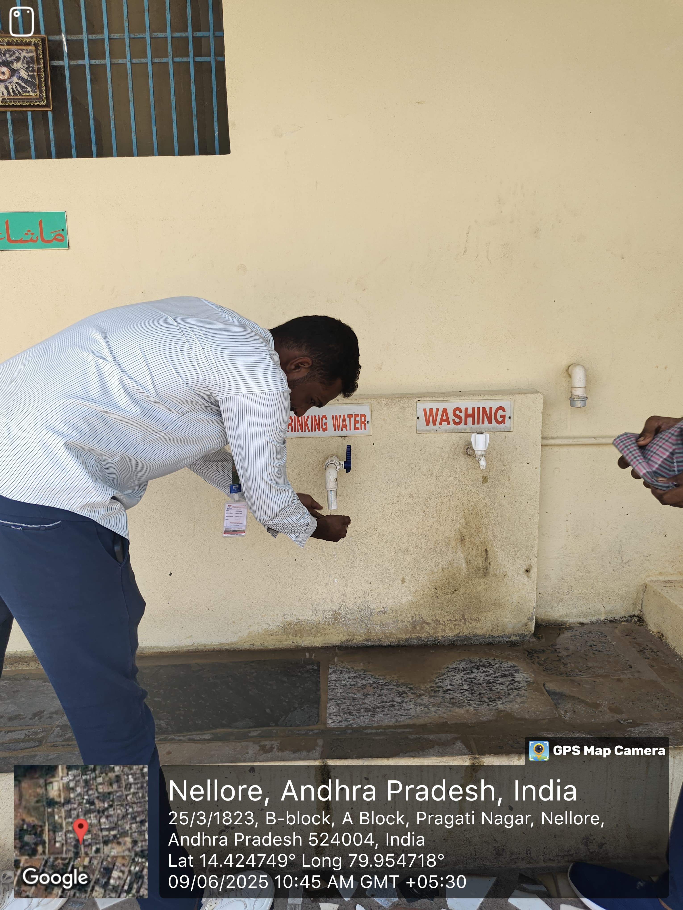
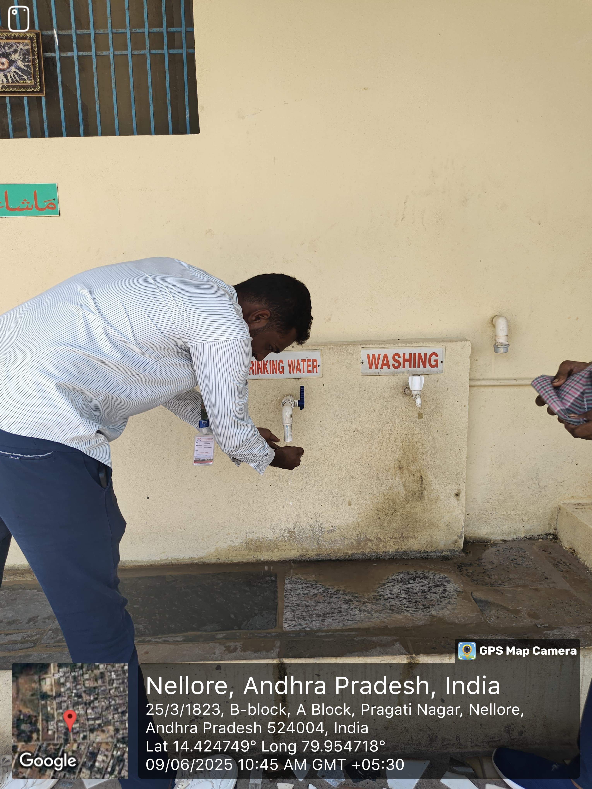

Week 1: Water Source Survey
•In Day 1 we went to Nellore to make a observation on the access of drinking water. In that area we observed that 45% of the people depend on Bore water and also some people depend upon bottle water and filter water.
•In Day 2 we visited a water plant near the locality and interviewed the owner of the water plant by that we gained knowledge about the different purification method.
•In Day 3 we visited the same locality and we communicated with the people about the access of the water and the times of the water. After we talk with user’s we came to know that, 20% people are using tap water, with time of the water is maximum 3 hours.
•In Day 4 Again, we visited the same street and we continued our survey in remaining houses. We observed that some of the houses are not getting sufficient water for daily use because there are more number of the people in the house.
•In Day 5 We visited the other areas and we interviewed some of the users. We observed that some of the users are getting water day-by-day because of the pipe lines.
•In Day 6 We visited same area and we survey the people about water diseases. We observed that some of the people suffering with water diseases like cold, cough, typhoid.
 


Observation and analysis of local water sources such as dams, rivers, and wells. The team visited various locations to document the availability and quality of water sources in the community.